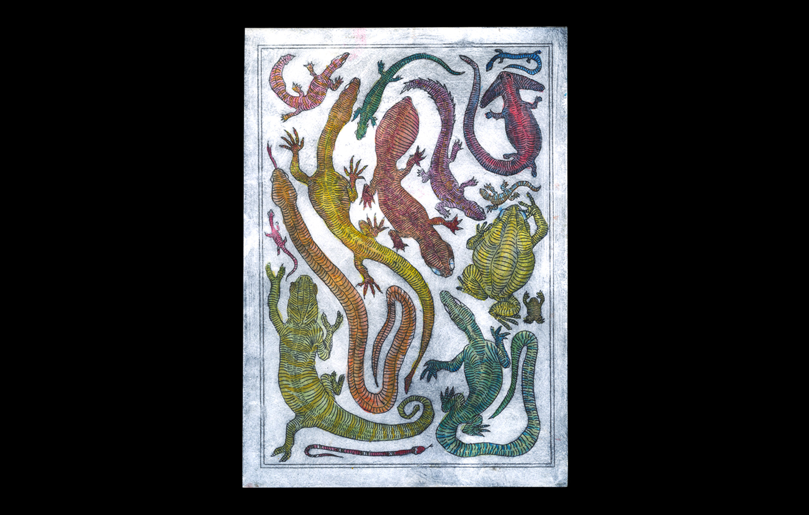
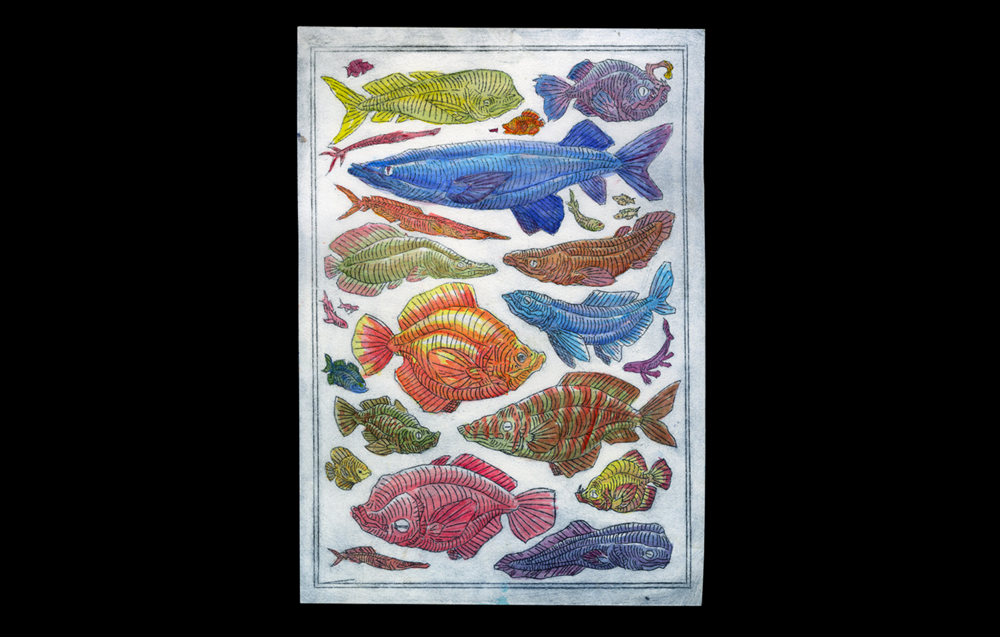
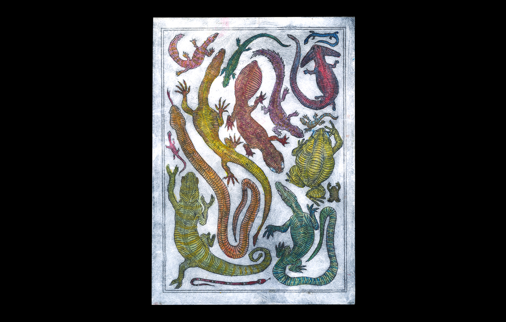
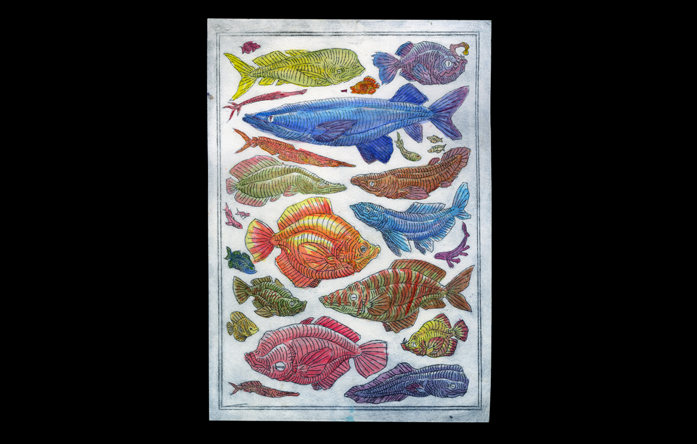
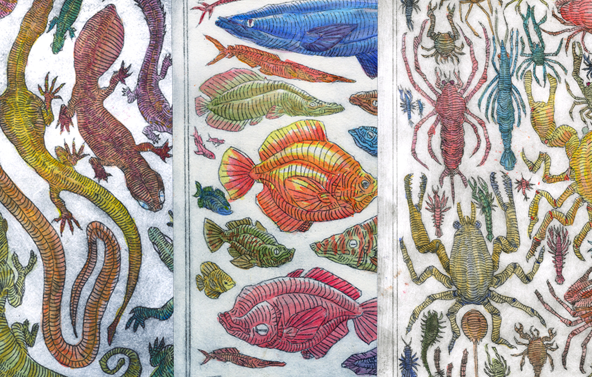
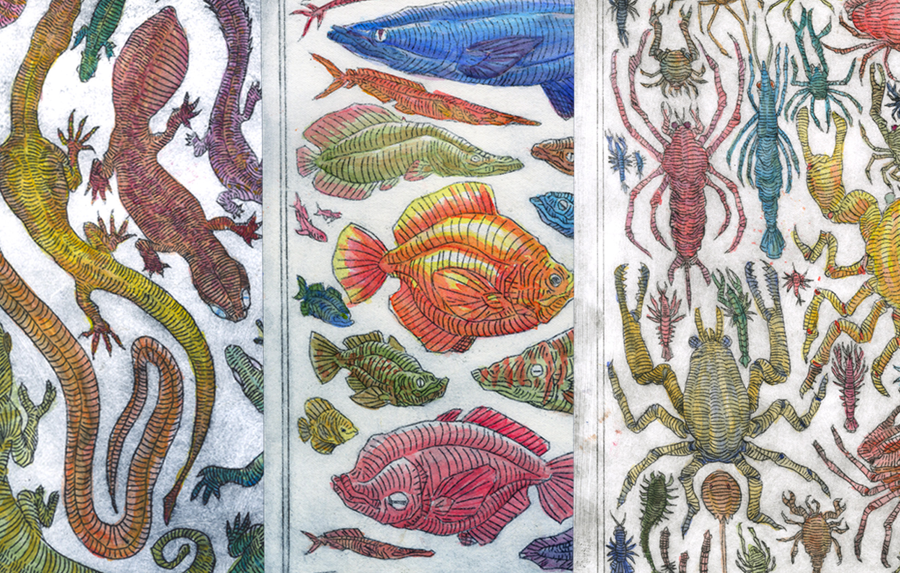

GRAVURE À LA POINTE SÈCHE — GRAVURE À LA POINTE SÈCHE —
GRAVURE À LA POINTE SÈCHE — GRAVURE À LA POINTE SÈCHE —
Cette série de trois gravures est inspirée des planches anatomiques du XIXe siècle. Elles ont été réalisées à la pointe sèche et colorisées à l’aquarelle.
1 — Planche Reptiles (Espèces ayant existé ou existantes)
2 — Planche Poissons (Formes inspirées d’espèces existantes)
3 — Planche Crustacés (Espèces inventées)
Au fil de la série, la reproduction de vraies espèces animales se fait plus rare, laissant place à l'invention de créatures fictives.
Ces formes imaginées restent cohérentes, car elles s'appuient sur une logique d'adaptation à des habitats biens réels.
 



 
